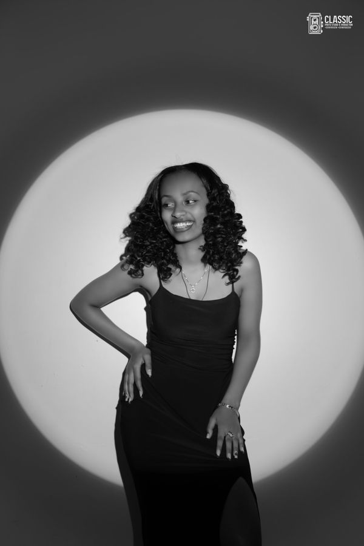

Tsedey Fasil. Why don't you have a seat right over there.
Open the case fileAfter years of close observation, the following counts are brought against the subject. Every single one of them is true, and she is guilty of all of them.
Photographs recovered over several years. Tap any exhibit to examine it closely.
Last confirmed count was five. The investigation suspects the number has gone up since. Log the recount here.
The subject plays the drum at church. Big side for the deep beat, small side for the high one. Try keeping up with her.
We met at the very start of freshman year. Since then the subject has been present at every up and every down. She has been there for the good days, the hard days, and all the ones in between.
Surveillance shows photobooth strips and late night video calls with terrible image quality. Investigators agree the image quality does not matter.
Two strangers at the start of uni. Neither of us knew this was the beginning of one of the best things that would happen to us.
Ups, downs, long days and good laughs. She made uni memorable, and none of it would have been the same without her.
Four years, done, as disciplined as ever.
Investigators are still trying to work out whether the extra year was the curriculum, or whether campus just felt quieter without her.
This case remains open. New evidence comes in all the time.
Gathered from the household of her best friend, where she is, by all accounts, a full member.
Loves me.
Which tells you she raised a daughter with excellent taste in friends.
Loves her.
No further questions.
Love her.
Unanimous, which almost never happens.
Loves her too.
And, like everyone else, asks how she's doing.
She studied psychology, so she usually does the assessing. For once, somebody else gets to write the report.
Exhibit D: a dog, because she loves animals and dogs above all. This one is very happy to see her.
| Subject | Tsedey Fasil |
| Communication | Exceptionally articulate. Clear, thoughtful, persuasive. |
| Moral compass | Fixed and reliable. Principled to the core. |
| Faith | Deep and sincere. Takes her walk with God seriously, and serves at church on the kebero. |
| Work ethic | Hustler. Disciplined. Does not quit. |
| Interests | Crime shows, especially anything with Chris Hansen. Dogs. Animals in general. |
| Temperament | Kind soul. Lovely to be around. Genuinely interesting. |
| Physical strength | See Exhibit P. |
| Risk assessment | Very high risk of making people love her. |
Assessed by someone more than lucky to call her a friend
All rise.

GUILTYGuilty of being the best friend anyone could ask for. Sentence: a lifetime of friendship, with no chance of parole.
መልካም ልደት ፀደይ
እግዚአብሔር ዕድሜና ጤና ይስጥሽ
Happy birthday, Tsedey. May God give you long life and good health. Your name means spring, the season after the rains, and that is exactly what you have been in my life.
Tsedey,
You made uni memorable. You were there for me in every up and every down, and you still are. Your family welcomed me, mine adores you, and somewhere along the way you stopped being my friend from class and became family.
I love how you speak, how you hold on to what you believe, how hard you work, and how kind you are to everyone, dogs included. I'm more than lucky to call you my friend.
Here's to this year, and to all the memories we haven't made yet.
Tinsae